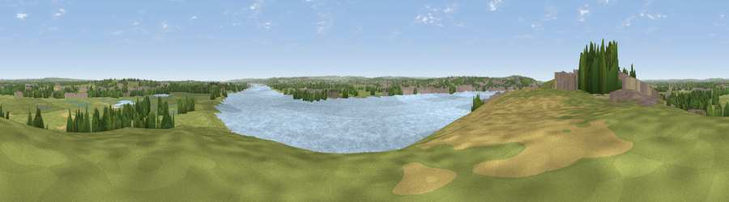

Viewpoint near Wennington
#24062 in England · top 18% of its area beats it · near WenningtonWhere it is
The exact computed spot (TQ 53125 79275). Click the marker for map links.
The view, rendered

A 360° render of this exact spot computed from the terrain model, tree cover and land cover — summer colours, afternoon light, calibrated against photographs of famous viewpoints. Real trees, hedges and buildings will differ in detail.
The panorama
Grey silhouette: terrain skyline in each direction (720 bearings, Earth curvature and refraction included). Dashed green: skyline with trees (+15 m) and buildings (+8 m) as obstacles. Blue strip: how far the ground is visible on each bearing.
Where the view opens
Wedge length = distance to the farthest visible ground on that bearing (vegetation-aware). Rings at 10, 25 and 50 km.
What fills the view
35% water · 33% grassland · 11% built-up · 9% woodland · 7% cropland · 3% wetland · 1% bare ground
Angular shares of the visible panorama (visual magnitude), not map area. Landscape diversity 0.67 (0–1 Shannon).
Key numbers
More beautiful places nearby
The staircase of upgrades: each row has a higher view potential than everything closer. Driving times are estimates from straight-line distance, calibrated against real road routing — check an actual route before setting out.
| Place | Direction | Drive | Score |
|---|---|---|---|
| Viewpoint near Erith | WNW · 1 km | ~3 min | 54.3 |
| Viewpoint near Ebbsfleet Valley | SE · 9 km | ~18 min | 56.1 |
| Viewpoint near Horndon On The Hill | ENE · 16 km | ~28 min | 58.8 |
| Viewpoint near Wrotham | SSE · 20 km | ~34 min | 65.1 |
| Viewpoint near Wrotham | SSE · 21 km | ~35 min | 66.6 |
| Viewpoint near Shipbourne | S · 26 km | ~42 min | 69.1 |
| Box Hill | SW · 43 km | ~63 min | 70.4 |
| Viewpoint near Box Hill Village | SW · 43 km | ~63 min | 71.0 |
51.49169, 0.20427 · source: screening · position refined by local search. Computed location — check access rights before visiting.